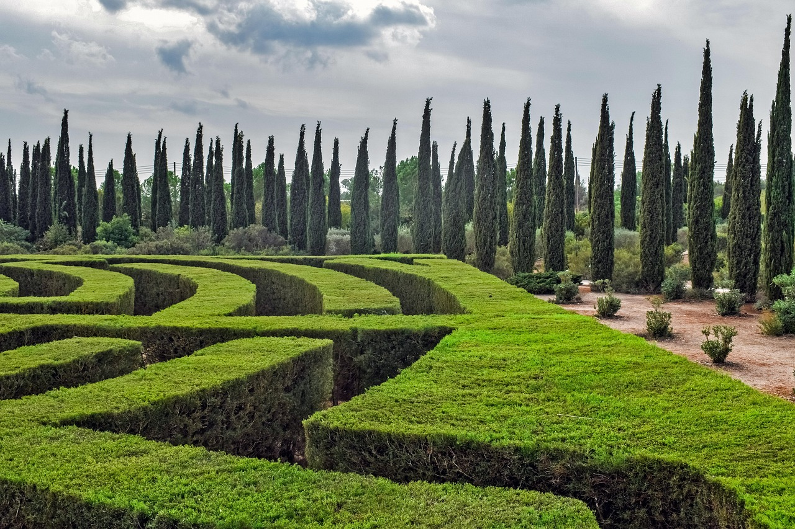

По данным за первое полугодие 2025 года, в России зарегистрировали 172 123 пожара, что на 1,8% меньше, чем за аналогичный период прошлого года (175 346 случаев). Некоторые другие показатели: В огне погибло 3 609 человек, среди них — 154 несовершеннолетних (снижение на 15,5%). Получили травмы 4 061 человек (уменьшение на 7,5%). Материальный ущерб от пожаров составил 12,1 млрд рублей, что выше показателя прошлого года (10,4 млрд рублей) на 17,1%. Работа пожарно-спасательных подразделений позволила спасти 11 806 человек и эвакуировать 88 475 человек. В среднем за сутки в стране происходил 951 пожар. Каждый день в результате возгораний погибало около 20 человек, получали травмы 22 человека, уничтожалось огнём порядка 106 строений.
деревьЯ - Покупай саженцы — сажай лес. Лес, в который можно вернуться.
ПРИМИ УЧАСТИЕ УЖЕ СЕЙЧАС
Вы спросите в чем наша мотивация? Пожары. Вырубка лесов. Продолжать не имеет смысла. Просто посмотрите.
Вот уже 2 года мы делаем мир зеленей,более 500 гектаров прекрасных лесов,парков,аллей.
Мы не остановимся.
ВЫ не остановитесь.

GreenWorld.co
© 2025 All Rights Reserved